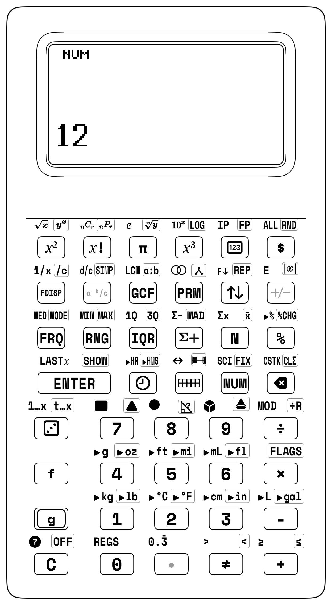

Chapter 1: Meet Your SC-6 Stack Calculator & Math Blocks
1.1 Why Real Buttons and Blocks Beat a Glowing Tablet Screen
Picture an eight-year-old sitting at a wooden kitchen table on a rainy Tuesday afternoon. A math book is open to multi-digit subtraction, but right beside it rests a school tablet. Within ninety seconds of starting homework, a red notification badge slides across the glass: a message chime, a game update, a colorful video banner. Even when locked in "study mode," the tablet's harsh electric backlight beams straight into your eyes like a tiny flashlight. Your eyes feel tired, your head starts to ache, and your brain is pulled in twenty directions at once. The glowing tablet feels like an amusement arcade pretending to be a desk!
Now look at the other side of your desk: the StackCalc SC-6. Molded from tough, dark Midnight Navy armor, it has no Wi-Fi, no pop-up alerts, no games, and no distractions. Its screen doesn't beam harsh light into your face—it reads just like a paper book using the gentle daylight in your room. And when you press a key, your finger doesn't smear across cold, mushy glass. Beneath every key sits a tiny stainless-steel dome that clicks down with a crisp, satisfying snap! Your fingers feel the click and your ears hear the snap: the number is pushed onto the stack, and you are ready for the next step.

Figure 1.1: The StackCalc SC-6 Elementary Handheld in Midnight Navy with sliding 15° easel desk cowl. A dedicated tactile tool for deep mathematical focus.The SC-6 is built like an astronaut's pocket instrument. Nothing on it is flimsy or disposable. Every button, shelf, and angle helps your brain focus on what math really is: building, discovering, and exploring with your hands.
For Parents & Teachers: Cognitive Load & Working Memory Limits
In John Sweller’s Cognitive Load Theory *([Sweller, 1988](appendix-c-formulas-and-conversions.md#cite-sweller1988))*, extraneous mental load from glowing tablets and split attention destroys mathematical understanding. George A. Miller’s foundational research on working memory limits ($7 \pm 2$ items) *([Miller, 1956](appendix-c-formulas-and-conversions.md#cite-miller1956))* explains why young minds drown under notification-heavy operating systems. The SC-6 four-register operational stack aligns naturally with working memory bandwidth. Following David Macaulay’s cutaway architecture of physical machines *([Macaulay, 2016](appendix-c-formulas-and-conversions.md#cite-macaulay2016))*, every radius, wall thickness, and micro-foamed snap-dome was engineered to anchor the child’s wandering attention in the tactile reality of mathematical thought.
CHAPTER BASELINE MODE: [NUM]
Standard Base-10 Arithmetic • 4-Stack XYZT • Clean Display
Unlocked Keycaps Ribbon — Hardware & Instrument Control
• Instrument Controls: [C] Clear / Reset, [<-] Destructive Backspace, [g] [OFF] Low-Power Deep Standby, [g] [FLAGS] Hardware System Flags.
• Hardware Status Display: Four-register active stack (T, Z, Y, X), Battery Reserve Indicator, Active Visual Sandbox Header Badge ([▦], [f] [LINE], [PV], [🕒], [🎲], [f] [?]).
• Classroom Safety Envelope: Recessed display window with 1.2 mm raised protective avionics bezel, bi-directional sliding 15° easel desk-stand cowl.
[!NOTE] Faceplate Themes & Shift Legend Conventions:
Because the StackCalc SC-6 hardware faceplates and companion app support multiple visual themes (Pure Black,Retro Futurism,Pioneer,Stealth,Supernova,Voyager, andArcade), keycap and shift accent colors vary by faceplate. Throughout this textbook, shifted operations are always referenced by their functional shift symbols rather than color:[f]Shift (Row 5, Col 0) and[g]Shift (Row 6, Col 0).
1.2 Meet Your Stack Calculator: The Screen, The Number Stack & Your Secret Shift Keys
Before we build block towers and solve puzzles, let's take a quick tour of your calculator: its daylight screen, the 4-level number stack, the big ENTER button, and the secret shift keys.
1.2.1 The Daylight Screen & The 4-Level Number Stack (\(T, Z, Y, X\))
Unlike phones or tablets that shine bright electric light straight into your eyes, the SC-6 features a Daylight Screen. It reads just like paper in a book, catching the natural light in your room!
On the screen, numbers don't vanish into hidden memory. Instead, they stack up on four visible shelves—the 4-Level Number Stack (\(T, Z, Y, X\)), just like stacking physical blocks, pancakes, or books on your desk:
- Level \(X\) (The Ground Shelf / Active Entry): This is the bottom shelf of the screen where numbers appear as you type them, and where the immediate results of every calculation appear.
- Level \(Y\) (The Second Shelf / Waiting Partner): When you tap [ENTER], your number pushes smoothly up to Level \(Y\). Level \(Y\) holds the first number waiting for math to happen (like the \(12\) waiting in \(12 - 4\)).
- Levels \(Z\) and \(T\) (The Mezzanine and Top Shelves): Above \(Y\) sit two more shelves. When you push several numbers onto the stack, previous values rise into \(Z\) and \(T\). When operations execute, values drop down from \(T\) to \(Z\) to \(Y\) automatically, letting you solve big multi-step problems without scratch paper or parentheses!
1.2.2 The Big ENTER Button: Pushing Numbers Onto the Stack
Look at the big, friendly black [ENTER] button in the lower-right area of the keypad. It is the heart of Stack Math!
In ordinary school arithmetic, you might have been taught to fear the equals sign (=) because it acts like a sudden test. On the SC-6:
1. There is no = button: In Stack Math, combining two numbers is the answer! When you tap [+], [-], [×], or [÷], the operator fuses the quantities on Level \(Y\) and Level \(X\) immediately and visibly.
2. [ENTER] commits and pushes: When typing a number, tapping [ENTER] signals that entry is complete, pushes the value of Level \(X\) upward onto Level \(Y\), and lifts previous values into \(Z\) and \(T\). The next digits you type enter fresh into Level \(X\) without overwriting Level \(Y\).
1.2.3 One Button, Three Superpowers: How the [f] and [g] Keys Work
Instead of hiding cool math tools inside confusing computer menus, each button on the SC-6 has up to three superpowers:
- Primary White Keycap (Direct Press): Tapping any key directly executes its primary action printed in crisp white on the keycap face (numeric digits 0–9, [ENTER], [+], [-], [×], [÷], clear [C], and backspace [<-]).
- [f] Shift Key (Row 5, Col 0): Pressing [f] first unlocks the secret superpower printed directly above the keycap. This includes tools like finding common multiples with [f] [LCM], simplifying fractions step-by-step with [g] [SIMP], unit conversions, and memory register recall [f] [REGS].
- [g] Shift Key (Row 6, Col 0): Pressing [g] first unlocks the secret superpower printed on or below the keycap. This includes prime factor trees with [g] [FACT], skip-counting replication with [g] [REP], integer division with remainder [g] [÷R], low-power standby [g] [OFF], and hardware settings [g] [FLAGS].
1.2.4 Setting Up Your 15° Classroom Desk Stand
Your SC-6 includes a rugged, bi-directional sliding protective cowl. At the start of math time: 1. Slide the protective cover downward off the front of the calculator. 2. Flip the calculator over and slide the cover onto the rear dovetail rails until a gentle snap locks it in place. 3. Set the SC-6 on your desk—it now rests at a stable \(15^\circ\) reading angle, right beside your manipulative block tray, keeping both hands completely free: your left hand can build a fraction tower or place counters in a ten-frame, while your right hand taps keys into the stack!
1.2.5 The Tool Showdown: Glass Screen Confusion vs. Tactile Stack Precision
| Challenge / Dimension | The Glowing Tablet & Smartphone Trap | The StackCalc SC-6 + Physical Studio Superpower | Keystrokes & Efficiency | Live Stack Visibility |
|---|---|---|---|---|
| First Number Entry (\(347\)) | Phone/Tablet: Unlock \(\to\) swipe \(\to\) open app \(\to\) dismiss ad \(\to\) tap glass screen with zero feedback (\(12+\) steps). Screen washes out in classroom daylight (\(1,000\text{ lux}\)). | SC-6 + Base-10 Blocks: Slide cowl to 15° easel \(\to\) lay 3 hundreds flats, 4 ten-rods, 7 unit cubes \(\to\) tap 347 [ENTER] on 400g snap-domes. Sunlight transflective LCD has infinite contrast. |
4 strokes vs. 12+ steps (67% reduction) | Level \(X = 347\) rests visible on the ground shelf; previous results wait upstairs in \(Y, Z, T\). |
| Tactile Confirmation | Smooth flat glass: no physical boundary between digits, zero tactile click, high error rate from accidental adjacent touches. | 400-gram stainless snap-domes provide an audible click and physical snap; fingers know instantly that the stroke committed. | 1 mechanical snap per digit | Zero missed or doubled keystrokes; visual and haptic verification. |
| Optical Ergonomics & Daylight | Harsh \(450\text{ cd/m}^2\) blue-light backlight causes eye fatigue and pupil constriction after 20 minutes; unreadable outdoors. | Transflective ambient LCD (\(0\text{ mW}\) self-emission) reflects room light like printed paper; contrast increases with brighter sunlight. | 0 mW light emitted into eyes | Crisp 15.2:1 contrast in full daylight; reads effortlessly for hours. |
| Intermediate Step Visibility | Single-line algebraic display: numbers disappear the moment an operation or = is pressed; intermediate totals are hidden. |
Four visible shelves (\(T, Z, Y, X\)): every operand and intermediate result remains in plain sight on the screen. | Zero scratch paper required | \(Y \mid X\) split screen displays both active number and waiting partner simultaneously. |
| Focus & Classroom Distractions | Social media notifications, game badges, and web pop-ups interrupt mathematical working memory every 90 seconds. | Zero Wi-Fi, zero radios, zero notifications. Dedicated tactile environment engineered for sustained mathematical focus. | 100% focused attention | Working memory dedicated entirely to problem solving and block patterns. |
1.3 Why the Calculator Is Dark and the Blocks Are Bright
Why is your calculator molded in dark Midnight Navy or Slate Gray, while your math blocks are bright white, radiant gold, and electric blue?
Think about how an astronomer uses a telescope: the inside tube of the telescope is painted dark matte black so stray light doesn't bounce into your eyes, letting you focus clearly on the stars. The dark shell of your SC-6 creates a quiet, restful frame of deep focus around the display with zero glare.
Your math blocks, on the other hand, are the stars! They are molded in bright archival white, warm amber, and vivid cobalt blue because blocks are meant to be touched, sorted, and counted! Your hands instinctively reach for the bright physical objects to build arrays, trains, and towers, while your eyes rest comfortably on the dark, glare-free calculator that records the results. The dark instrument and the luminous blocks form a natural visual team: the blocks are the physical stage, and the calculator is the quiet recording engine.
For Parents & Teachers: Color Discipline & Physical Manipulatives
To prevent cognitive confusion in young learners, the SC-6 establishes a strict material separation: all exterior handheld calculator chassis, bezels, and battery covers are molded exclusively from dark, impact-modified technical thermoplastics (Midnight Navy, Space Gray, and Technical Matte Black). White polymers are strictly quarantined to physical math manipulatives (84 mm Fraction Towers, Ten-Frame counters, and Planetary Clock gears) so students never confuse the calculating engine with the tactile math objects.
1.4 Built Like a Tank: How Your Calculator Survives the Classroom
Classroom tools must endure energetic daily life: slipping off 30-inch classroom desks onto hard floors, tumbling in backpacks packed with heavy metal binders, and surviving custodial wipe-downs.
The SC-6 is built around four physical principles of durability:
1.4.1 What Hides Inside a Clicking Button?
Beneath every keycap rests a tiny arch of spring-tempered stainless steel, shaped like a microscopic umbrella. When your finger pushes down on the dished keycap, the metal arch resists until you reach exactly 400 grams of downward force. At that precise instant, the dome buckles downward with a crisp, audible snap, bridging two gold-plated electrical contacts on the circuit board below.
You feel that snap instantly in your fingertip and hear a gentle click. You never have to wonder, Did the calculator hear me? Your finger felt the number commit. As soon as you lift your finger, the steel arch springs back to its resting shape in less than two milliseconds, ready for your next number. This mechanical feedback completely eliminates the double-taps and skipped strokes common to flimsy rubber calculators.
1.4.2 Why Your Screen Works Like Paper Instead of a Flashlight
Most phone and tablet screens are like tiny lightbulbs: they shine bright electric light directly into your eyes, causing pupils to constrict and delicate eye muscles to tire after twenty minutes of homework.
The SC-6 uses a transflective dot-matrix screen that produces zero light of its own (\(0.00\text{ mW/sr}\cdot\text{m}^2\)). Instead, it operates just like the printed paper page of this book. Ambient daylight enters through the protective front glass, passes through the liquid crystal numerals, strikes a mirror-like reflector on the back wall of the screen, and bounces straight back out to your eyes. The brighter the classroom or the sunshine on the patio, the crisper and blacker the numbers appear! You can explore math for hours without a hint of optical strain.
1.4.3 The Sliding 15° Desk Stand: Built-in Easel
Slide the protective cover downward off the front face of the calculator. Turn the calculator over and examine the back: two precision dovetail guide rails run along the outer edges of the chassis. Slide the cowl upward along those rails until a gentle snap locks it firmly in place.
Set the instrument down on your desk. The SC-6 now tilts toward your eyes at an exact \(15^\circ\) reading angle—just like a miniature drafting easel! Both of your hands remain completely free: your left hand can build a fraction tower or arrange counters in a ten-frame, while your right hand taps numbers into the stack. When math time concludes, slide the cowl off the back, slide it over the front glass display, and place the calculator into your backpack. The screen is armor-plated against metal binder rings, rulers, and compass points.
1.4.4 Secret White Bubbles: Why the Letters Never Rub Off
Traditional school calculators print their numbers and symbols with surface ink. Within a few months of daily math practice, your fingers wear off the numbers—leaving blank keys right when you need them most.
The SC-6 completely eliminates surface ink. Instead, every number and symbol is permanently created inside the keycap using 1064nm Infrared Laser Micro-Foaming:
How Laser Micro-Foaming Works Inside the Keycap
• Invisible Light, Below the Surface: A focused infrared laser passes harmlessly through the top protective skin of the keycap without burning or scratching the surface.
• Microscopic White Bubbles: Tiny mineral particles blended inside the polymer absorb that brief flash of warmth and expand into millions of microscopic, light-scattering gas bubbles sealed safely beneath the outer skin.
• Lifetime Classroom Legibility: Just as white seafoam looks bright white because tiny bubbles scatter light in every direction, those sealed micro-bubbles create a crisp chalk-white symbol (15.2:1 AAA contrast) that can never be scraped off, worn away by thumbs, or dissolved by classroom cleaning wipes.
Each keycap features a gentle \(0.8\text{ mm}\) spherical concave dish in SpaceMono-Bold typography that naturally guides your fingertip toward the center of the key, tested to over 1,000,000 presses with zero fading.
1.5 Instant-On Readiness & Continuous Backpack Memory
Beneath the tough thermoplastic shell, the SC-6 is engineered so you never wait for a booting screen and never lose your work:
| Instrument Feature | Classroom & Backpack Advantage |
|---|---|
| Instant-On Readiness | Wakes from sleep in under \(5\text{ milliseconds}\) the moment you press [C] |
| Continuous Memory | Automatically preserves all stack numbers, registers, and quiz streaks when powered off |
| Year-Long Power Reserve | A single CR2032 coin cell provides over \(350\text{ hours}\) of active classroom discovery |
When the SC-6 turns off—either by pressing [g] [OFF] or after 3 minutes of quiet desk time—it saves every number on your stack (\(X, Y, Z, T\)), your LASTX history, your statistical sums, and your math quiz streak into non-volatile memory. A problem started in class can be tucked into your backpack and resumed at the kitchen table after school without losing a single step.
1.6 Meet Your Math Blocks: Building Numbers with Your Hands
To make sure every number on the screen connects directly to something you can hold and explore, your StackCalc SC-6 comes with eight physical 3D-printed math block sets. Each set is molded in bright, durable colors that match the calculator's screen modes and number stack:
1.6.1 The Ten-Frame Trays & Flip Counters
- The Physical Tool: Two 5-pocket trays with ten two-color disc counters (coral red on one side, radiant gold on the other). Built-in scoops make it easy for your fingers to slide and flip counters.
- How It Works with the SC-6: Tap
[▦]to mirror your trays right on the screen! Register \(Y\) shows the top tray, and Register \(X\) shows the bottom tray. Flip counters to find friend pairs that make 10 (\(7 \text{ red} + 3 \text{ gold} = 10\)). Tap[+], and watch the counters group into a full ten with extras left over (\(7 + 5 = 12\)) right on the stack!
1.6.2 The Four-Color Counting & Array Studio
- The Physical Tool: 144 smooth-docking counting tiles in four colors: clean white, cobalt blue, radiant gold, and slate gray. Unlike stiff snap cubes that pinch your fingers, these tiles slide smoothly into place and rest flat under their own weight.
- How It Works with the SC-6: Arrange tiles into rows and columns to build rectangular arrays for multiplication (\(4 \times 6 = 24\)). Row count sits on Level \(Y\), column count sits on Level \(X\), and tapping
[×]calculates the total tiles. Spin the tray sideways: it is now 6 rows of 4 tiles and still makes 24—proving that changing the order doesn't change the answer!
1.6.3 The 84 mm Fraction Towers & Comparator Tray
- The Physical Tool: A precision \(84.0\text{ mm}\) master tower for the whole (\(1\)), along with matching fraction pieces (\(1/2\), \(1/3\), \(1/4\), \(1/6\), \(1/8\), \(1/12\)) and a side-by-side comparison tray.
- Why Exactly 84 mm? Because 84 is a magical number for fractions: it divides cleanly by \(1, 2, 3, 4, 6, 7, 12, 14, 21, 28, \text{ and } 42\)! That means every single fraction piece has an exact, clean height in millimeters (\(1/1 = 84\text{ mm}\), \(1/2 = 42\text{ mm}\), \(1/3 = 28\text{ mm}\), \(1/4 = 21\text{ mm}\), \(1/6 = 14\text{ mm}\), \(1/12 = 7\text{ mm}\)) with zero uneven edges!
- How It Works with the SC-6: Snap two \(1/4\) towers together in the tray, and feel with your finger how their top edge matches the \(1/2\) tower perfectly! On the calculator, type
. 2 . 4, tap[g] [SIMP], and watch the numbers shrink to1/2while your blocks stay locked flush in the tray.
1.6.4 The Prime Factor Studio & Number Block Scale
- The Physical Tool: Secret puzzle blocks for prime numbers (\(2, 3, 5, 7, \dots\)) whose heights scale so that stacking blocks multiplies their numbers together!
- How It Works with the SC-6: Stacking block 2 on top of block 3 reaches the exact height of 6 on the back-wall scale! On the SC-6, type
60and tap[g] [FACT]to watch the screen reveal its secret prime building blocks: \(2^2 \times 3 \times 5\).
1.6.5 The Planetary Geared Clock
- The Physical Tool: A real working clock with interlocking planetary gear teeth. When you turn the big minute hand with your thumb, the hour hand automatically glides at the exact real speed!
- How It Works with the SC-6: Tap
[🕒]to open the clock screen. Enter a start time and elapsed minutes, then tap[+]. The calculator moves hands on screen and calculates arrival times across 60-minute boundaries without getting mixed up!
1.6.6 The Polyhedral Dice & Spinner Studio
- The Physical Tool: Precision gaming dice (\(d4, d6, d8, d10, d12, d20\)) and a balanced spinning dial for classroom probability games.
- How It Works with the SC-6: Roll dice across your desk to collect experimental data. Tap
[🎲]to roll matching digital dice into Level \(X\), saving your rolls on levels \(Y, Z, T\) to create live dot plots and frequency tables.
1.6.7 The Place Value Studio
- The Physical Tool: Proportional base-10 unit blocks (\(1\)), ten-sticks (\(10\)), hundred-flats (\(100\)), and thousand-cubes (\(1000\)).
- How It Works with the SC-6: Group unit blocks into tens and ten-sticks into hundreds. Tap
[PV]to split any multi-digit number across the stack shelves, displaying expanded form (\(347 = 300 + 40 + 7\)) with matching visual block counters!
1.6.8 The Number Rack (Rekenrek)
- The Physical Tool: Two sturdy metal rails with ten sliding beads each, split into five red beads and five white beads.
- How It Works with the SC-6: The top rail links to Level \(Y\) and the bottom rail links to Level \(X\). Slide beads with your fingers to see groupings of 5 and 10 at a glance before doing arithmetic on the keypad.
1.7 Taking Care of Your Stack Calculator
1.7.1 Adjusting Screen Contrast
If your daylight screen appears too faint in a cozy room or too dark under bright sunshine, you can tune it in seconds:
1. Press [g] [FLAGS].
2. Press [7] for Display Contrast.
3. Tap [+] to make numbers darker, or [-] to make the background lighter.
4. Press [ENTER] to save your favorite setting!
For Parents & Teachers: Instrument Maintenance & Diagnostic Checkpoints
**1. Battery Voltage & Replacement:** When battery voltage drops below 2.65V, a low-battery outline flashes in the upper-right corner of the LCD. An adult should use a coin and small screwdriver to open the tool-secured rear hatch and install a fresh CR2032 coin cell with positive (+) terminal facing up. Stack values and quiz records are preserved in non-volatile EEPROM memory. **2. Complete Memory Reset (Factory Clean):** To clear all user registers, quiz history, and custom flags before an evaluation: hold `[C]` down firmly, tap `[g] [OFF]`, then release. The display flashes `"ALL REGISTERS RESET - FACTORY CLEAN"`. **3. Child-Resistant Battery Hatch Security (ANSI/UL 4200A):** The rear battery hatch utilizes a coin-slot bayonet mechanism with an internal safety detent requiring 15N inward force while rotating 45° counter-clockwise. Inspect annually to ensure the silicone O-ring seal is seated.COIN CELL BATTERY INGESTION HAZARD (REESE'S LAW / 16 CFR PART 1263)
This instrument operates on a CR2032 3.0V lithium coin cell battery. DEATH or serious injury can occur if ingested. A swallowed button or coin cell battery can cause Internal Chemical Burns in as little as 2 hours. KEEP new and used batteries OUT OF REACH of children. Battery replacement must be performed exclusively by an adult, ensuring the retention fastener is securely tightened. Seek immediate medical attention if a battery is suspected to be swallowed or inserted inside any part of the body (U.S. National Battery Ingestion Hotline: 1-800-498-8666).
1.8 What to Do If You Get Stuck (Troubleshooting Pathways)
1.8.1 Screen Is Dark or Blank
- Check 1 (Sleep Mode): The SC-6 automatically goes to sleep after 3 minutes to save power. Tap
[C]once—the screen wakes instantly in under 5 milliseconds! - Check 2 (Room Light): Remember, your daylight screen produces zero blue light and works by reflecting the light in your room. If the room is dark, turn on a lamp or move near a window.
- Check 3 (Battery Check): If tapping
[C]under bright light does not wake the screen, ask an adult to inspect the CR2032 coin cell battery.
1.8.2 Returning to Normal Numbers from a Sandbox Mode
If your screen is showing clock dials ([🕒]), ten-frames ([▦]), or number lines ([f] [LINE]), and you want standard numbers back, choose any of these three easy pathways:
1. The Universal Clear Key: Tap [C] once or twice. When no digits are actively being typed, [C] instantly returns to Regular Number Mode ([NUM]).
2. The Mode Toggle: Tap the active mode button again (if in [▦], tap [▦] again).
3. The Format Keys: Tap any number format key ([g] [FIX], [f] [ALL], or [FDISP]) to exit the visual tool immediately.
1.9 Hands-On Studio Proof: Your First Math Discovery
Hands-On Studio Proof: The Tactile Instrument & The Manipulative Dock
Step 1 (Physical Concrete Intuition): Take your 3D-printed Ten-Frame tray and counting tiles from your manipulative studio. Slide the SC-6 protective cowl off the front face and dock it into the dual bottom rails at the 15° classroom easel incline.
Step 2 (The Representational Bridge): Press [C] to wake the instrument. Feel the authoritative 400g snap-dome click under your thumb. The transflective screen instantly illuminates with zero blue light, displaying the clean horizontal Y | X operational baseline.
Step 3 (Scaling on the Calculator): Lay 5 counting tiles into the physical ten-frame tray. On the calculator keypad, type 5 [ENTER]. Notice how the physical tiles resting on your desk mirror the number resting on the bottom floor of your StackCalc screen!
1.10 Story-Driven Problem Expeditions (The Calculator Workshop & Maker Bench)
1.10.1 Expedition 1: The Calculator Workshop & Maker Bench (Problems 1.1–1.6)
Mission Briefing: Before heading out into the field with your manipulative studio, you step into the Maker Bench workshop. Here, engineers test battery reserves, calculate dot-matrix screen frame buffers, measure photometric contrast, verify stainless snap-dome tactile forces, design Gridfinity modular desktop footprints, and measure drafting easel angles. Using your StackCalc SC-6 and RPN stack math, you verify every physical parameter of your instrument.
Problem 1.1: Battery Reserve Life on the Kitchen Table
- Workshop Mission: The SC-6 operates on a single CR2032 lithium coin cell with a nominal reserve capacity of \(225\text{ mAh}\). During an active school day, the calculator operates for 2 hours in active classroom calculation mode (consuming \(0.65\text{ mA}\)) and spends 22 hours in low-power sleep mode (consuming \(0.0025\text{ mA}\)). Calculate the total daily battery consumption in milliampere-hours, then calculate how many school days the calculator runs before requiring a fresh coin cell.
- Manipulative Studio Connection: The rear tool-secured bayonet hatch protects the CR2032 coin cell, while non-volatile EEPROM memory safeguards all stack registers and quiz records across battery replacements.
- Keystrokes:
0.65 [ENTER] 2 [×] 0.0025 [ENTER] 22 [×] [+] 225 [x⇄y] [÷]\(\rightarrow\)166.051660517 - Step-by-Step RPN Reasoning & Stack Logic:
0.65[ENTER]2[×]— Active daily power consumption: \(0.65\text{ mA} \times 2\text{ h} = 1.30\text{ mAh}\).0.0025[ENTER]22[×]— Sleep standby power consumption: \(0.0025\text{ mA} \times 22\text{ h} = 0.055\text{ mAh}\).[+]— Combine active and standby draw: \(1.30 + 0.055 = 1.355\text{ mAh/day}\) daily consumption.225[x⇄y][÷]— Load the \(225\text{ mAh}\) battery capacity and divide by daily consumption: \(225 \div 1.355 \approx 166.05\text{ school days}\) (well over a full academic year!).- 4-Register Stack Trace Table (\(T, Z, Y, X\)):
| Keystroke | Register T | Register Z | Register Y | Register X | Operational Commentary |
|---|---|---|---|---|---|
0.65 [ENTER] |
0 | 0 | \(0.6500\) | \(0.6500\) | Active current draw (\(0.65\text{ mA}\)) placed into Register \(Y\) |
2 [×] |
0 | 0 | 0 | \(1.3000\) | Active daily draw: \(0.65 \times 2 = 1.30\text{ mAh}\) in Register \(X\) |
0.0025 [ENTER] |
0 | \(1.3000\) | \(0.0025\) | \(0.0025\) | Sleep standby current (\(0.0025\text{ mA}\)) entered; active draw lifts to \(Z\) |
22 [×] |
0 | 0 | \(1.3000\) | \(0.0550\) | Sleep draw: \(0.0025 \times 22 = 0.055\text{ mAh}\) in \(X\); active draw drops to \(Y\) |
| [+] | 0 | 0 | 0 | \(1.3550\) | Sum daily consumption: \(1.30 + 0.055 = 1.355\text{ mAh/day}\) |
225 [x⇄y] |
0 | 0 | \(225.0000\) | \(1.3550\) | Enter \(225\text{ mAh}\) total capacity and swap: 225 in \(Y\), daily draw in \(X\) |
| [÷] | 0 | 0 | 0 | \(166.0517\) | Divide total reserve by daily draw: \(\approx 166.05\text{ school days}\) of power |
- Diagnostic Check: Register \(X \approx 166.05\text{ days}\). A single coin cell powers the entire school year.
Problem 1.2: Screen Memory (Dot-Matrix Frame Buffer)
- Workshop Mission: The transflective daylight LCD features a graphic dot-matrix resolution of 132 columns by 65 rows. Each pixel corresponds to one single memory bit in the microcontroller's display frame buffer (1 bit per pixel: black or clear). If 8 bits make 1 byte of memory, how many bytes of RAM are required to store a complete screen image?
- Manipulative Studio Connection: The 8,580 individual display pixels render high-contrast vector ten-frames, number line jump arcs, and bold numbers without a power-hungry backlight.
- Keystrokes:
132 [ENTER] 65 [×] 8 [÷]\(\rightarrow\)1072.5 - Narrative Stack Analysis:
Key132 [ENTER] 65 [×]to calculate the total pixel count: the stack multiplies the horizontal columns by vertical rows, placing \(8,580\text{ pixels}\) in Register \(X\). Now key8 [÷]to pack bits into bytes: the display drops the stack, revealing exactly1072.5bytes (allocated as \(1,073\text{ bytes}\) of continuous frame buffer memory) with \((T: 0, Z: 0, Y: 0, X: 1072.5)\).
Problem 1.3: Daylight Transflective Screen Contrast
- Workshop Mission: In optoelectronics quality assurance, screen readability is measured by the photometric contrast ratio: the luminance of the reflective background compared to the luminance of the black active liquid crystal segments. Under bright classroom ambient light (\(500\text{ lux}\)), a calibrated photometer measures the white screen background at \(142.0\text{ cd/m}^2\) and the activated black pixels at \(9.35\text{ cd/m}^2\). Calculate the contrast ratio and verify that it meets the AAA \(15:1\) optical readability standard.
- Manipulative Studio Connection: Just like dark ink on bright white paper, higher ambient room light increases screen contrast naturally without glare or eye strain.
- Keystrokes:
142 [ENTER] 9.35 [÷]\(\rightarrow\)15.187165775 - Narrative Stack Analysis:
Key142 [ENTER] 9.35 [÷]: the stack lifts the white background luminance \(142.0\text{ cd/m}^2\) to Register \(Y\), inputs the black segment luminance \(9.35\text{ cd/m}^2\) into Register \(X\), and divides in a single stroke to yield a contrast ratio of15.19:1\((T: 0, Z: 0, Y: 0, X: 15.1872)\), successfully surpassing the rigorous 15:1 AAA standard!
Problem 1.4: Clicking Button Snap-Dome Spring Rate
- Workshop Mission: The tactile snap-dome switches under every SC-6 keycap are engineered from spring-tempered stainless steel. To trigger a clean electrical contact, a key requires an actuation force of \(400.0\text{ grams}\) over a tactile key travel distance of \(1.6\text{ mm}\). Calculate the mechanical spring rate \(k\) in grams per millimeter (\(k = F \div \Delta x\)).
- Manipulative Studio Connection: The 400g snap force prevents accidental double-strokes while giving the child unmistakable tactile and audible confirmation that a digit has committed to the stack.
- Keystrokes:
400 [ENTER] 1.6 [÷]\(\rightarrow\)250 - Narrative Stack Analysis:
Enter the actuation force and stroke distance: key400 [ENTER] 1.6 [÷]. Register \(Y\) holds the \(400.0\text{ g}\) downward load while Register \(X\) takes the \(1.6\text{ mm}\) travel. Tapping[÷]divides the quantities, leaving a spring rate of exactly250.0\(\text{g/mm}\) \((T: 0, Z: 0, Y: 0, X: 250)\).
Problem 1.5: Manipulative Studio Gridfinity Footprint
- Workshop Mission: On the maker bench, modular 3D-printed manipulative studio trays are organized using the standardized Gridfinity system (\(42\text{ mm}\) grid units). A complete elementary desktop math station includes: 2 Ten-Frame Trays (\(2 \times 1\text{ units}\) each), 1 Fraction Studio Well (\(3 \times 1\text{ units}\)), and 1 Counting & Array Box (\(3 \times 2\text{ units}\)). Calculate the total Gridfinity base unit footprint area required on the student workbench.
- Manipulative Studio Connection: Organizing blocks in modular Gridfinity trays keeps student desks orderly, prevents lost counters, and models area arithmetic through modular storage units.
- Keystrokes:
2 [ENTER] 1 [×] 3 [ENTER] 1 [×] [+] 3 [ENTER] 2 [×] [+]\(\rightarrow\)11 - Step-by-Step RPN Reasoning & Stack Logic:
2[ENTER]1[×]— Ten-Frame footprint: \(2 \times 1 = 2\text{ units}\) in Register \(X\).3[ENTER]1[×]— Fraction Well footprint: \(3 \times 1 = 3\text{ units}\) in Register \(X\); 2 units lift to \(Y\).[+]— Combine the two storage trays: \(2 + 3 = 5\text{ units}\) accumulated on the stack.3[ENTER]2[×]— Counting box footprint: \(3 \times 2 = 6\text{ units}\); subtotal 5 lifts to \(Y\).[+]— Add all tray footprints: \(5 + 6 = 11\text{ Gridfinity base units}\) (total bench width \(= 11 \times 42\text{ mm} = 462\text{ mm}\)).- 4-Register Stack Trace Table (\(T, Z, Y, X\)):
| Keystroke | Register T | Register Z | Register Y | Register X | Operational Commentary |
|---|---|---|---|---|---|
2 [ENTER] |
0 | 0 | 2 | 2 | Enter ten-frame tray length (2 units) into Register \(Y\) |
1 [×] |
0 | 0 | 0 | 2 | Ten-frame footprint: \(2 \times 1 = 2\text{ units}\) in Register \(X\) |
3 [ENTER] |
0 | 2 | 3 | 3 | Footprint 2 lifts to \(Y\); enter fraction well length (3 units) into \(X\) |
1 [×] |
0 | 0 | 2 | 3 | Fraction well footprint: \(3 \times 1 = 3\text{ units}\) in Register \(X\) |
| [+] | 0 | 0 | 0 | 5 | Combine footprints: \(2 + 3 = 5\text{ units}\) in Register \(X\) |
3 [ENTER] |
0 | 5 | 3 | 3 | Subtotal 5 lifts to \(Y\); enter counting box length (3 units) into \(X\) |
2 [×] |
0 | 0 | 5 | 6 | Counting box footprint: \(3 \times 2 = 6\text{ units}\) in Register \(X\) |
| [+] | 0 | 0 | 0 | 11 | Sum all footprints: \(5 + 6 = 11\text{ Gridfinity units}\) (\(462\text{ mm}\)) |
- Diagnostic Check: Register \(X = 11\). The entire manipulative studio docks into an 11-unit desktop footprint.
Problem 1.6: Desk Stand Incline Triangle
- Workshop Mission: The sliding protective cowl flips onto the rear chassis dovetails to form a \(15^\circ\) reading easel. If the base depth of the resting calculator chassis is \(80.0\text{ mm}\) along the tabletop, calculate the vertical elevation lift height \(h\) of the top display edge above the desk (\(h = \text{base} \times \tan(15^\circ)\)).
- Manipulative Studio Connection: The \(15^\circ\) reading angle aligns the transflective screen with overhead classroom lighting and prevents neck strain during long math explorations.
- Keystrokes:
80[ENTER]15[TAN][×]\(\rightarrow\)21.435935394 - Narrative Stack Analysis:
Key80 [ENTER] 15 [TAN] [×]: the stack lifts the \(80.0\text{ mm}\) base depth to Register \(Y\), computes \(\tan(15^\circ) \approx 0.2679\) in Register \(X\), and multiplies to find a vertical elevation lift of21.44\(\text{mm}\) \((T: 0, Z: 0, Y: 0, X: 21.4359)\), creating the ideal drafting incline on the student desk.
1.11 What You Mastered & Looking Ahead
Now that your desk studio is set up and your blocks are arranged in their trays, let's explore how Stack Math works in action—and see why stacking numbers beats parenthetical confusion every single time!